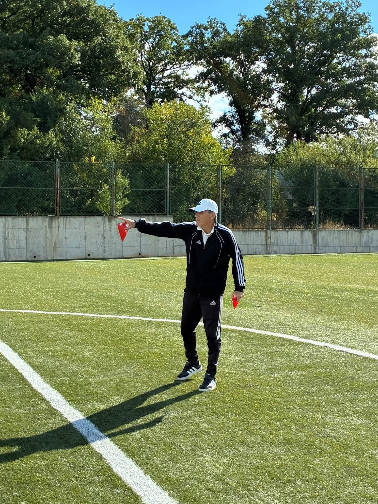

United Blagoevgrad
За клуба
Клуб
История
[Текст за кратка история на клуба ще бъде добавен.]

Ръководство
Красимир Трайков
Президент
Красимир Трайков е основател и президент на ФК „Юнайтед Благоевград“.
- Бивш футболист на „Пирин“, „Вихрен“ и „Пирин“ (Гоце Делчев).
- Има треньорски опит в България, САЩ, Германия, Белгия и Канада.
- Клубът е създаден с идея да дава възможност за развитие на футболисти от региона.
Фактологичен източник: в. „Струма“.
Архив
История
[Текст за историята на клуба ще бъде добавен.]